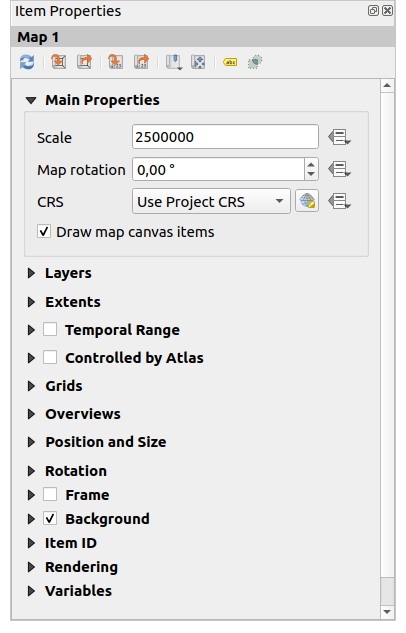
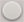
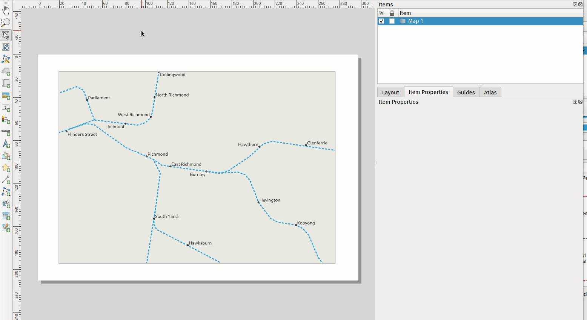
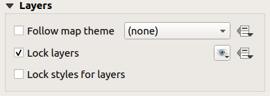
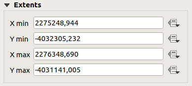
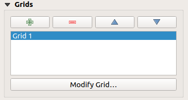
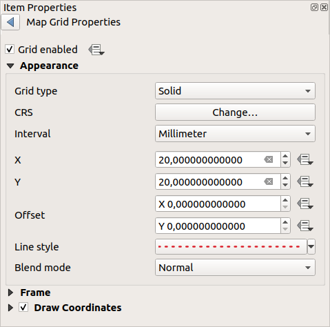
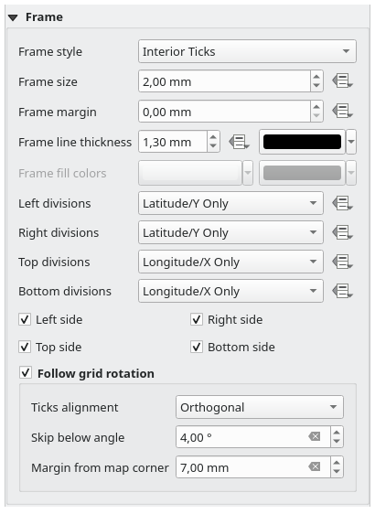
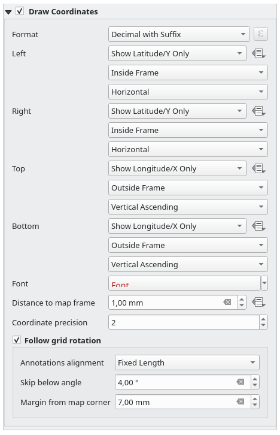
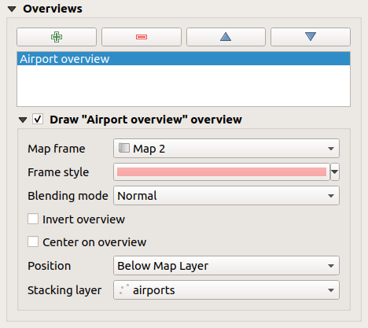

重要
翻訳は あなたが参加できる コミュニティの取り組みです。このページは現在 100.00% 翻訳されています。
18.2.2. 地図アイテム
地図アイテムは、あなたがマップキャンバスでデザインした地図を表示する主要な枠です。 地図を追加 ツールを使用して、 アイテムの作成手順 に従い、新しい地図アイテムを追加してください。これは、 レイアウトアイテムの操作 と同じ方法で操作できます。
{kind=link}
デフォルトでは、新しい地図アイテムは マップキャンバス の表示範囲と可視レイヤを現在の状態で表示します。これは アイテムプロパティ パネルを使用してカスタマイズすることができます。 アイテムの共通プロパティ の他に、地図アイテムには以下に示す機能があります。

図 18.14 地図アイテムプロパティパネル
18.2.2.1. ツールバー
地図の アイテムプロパティ パネルには、以下の機能を持つツールバーが埋め込まれています。
ラベルの設定 ：レイアウトのマップアイテム範囲における地物ラベルの動作（配置、可視性など）を制御します：
地図の端からのマージン（余白） はデータによる定義も可能な地図アイテムの端からの距離で、これを設定すると、距離がこの値以内ではラベルは表示されません。
地図の端のラベルは省略 ：これは、一部が地図アイテムの許容範囲外にあるラベルをレンダリングするかどうかを制御します。チェックを入れた場合、このようなラベルも表示されます（可視領域内に完全に見えるように配置する方法がない場合）。チェックされていない場合、部分的に見えるラベルは表示されません。
ラベルブロック ：他のレイアウトアイテム（スケールバー、方位記号、地図など）を アクティブな 地図アイテム内の地図ラベルに対するブロッカーとしてマークすることができます。これにより、マークしたアイテムの下に地図ラベルを配置することができなくなり、ラベルの配置エンジンはこのようなラベルを別の場所に配置するよう試みるか、完全に破棄することになります。
地図の端からのマージン（余白） が設定されている場合、地図ラベルはチェックされたレイアウトアイテムから指定距離よりも近い場所には配置されません。
位置未定ラベルの表示 ：位置未定のラベルを あらかじめ定義した色 で強調表示することにより、ラベルがレイアウト地図から無くなっているかどうか（例えば、他の地図ラベルと衝突していたり、ラベルを配置する十分なスペースが無いために）を確認することができます。
 クリッピング設定 ：地図アイテムを地図帳地物やシェープアイテム、ポリゴンアイテムで切り抜くことができます。
クリッピング設定 ：地図アイテムを地図帳地物やシェープアイテム、ポリゴンアイテムで切り抜くことができます。 地図帳地物に切り抜く ：レイアウト地図アイテムを現在の 地図帳地物 で自動的に切り抜くかどうかを決定できます。
地図帳地物に切り抜く ：レイアウト地図アイテムを現在の 地図帳地物 で自動的に切り抜くかどうかを決定できます。さまざまなクリッピングモードが利用可能です：
レンダリング中のみクリッピング ：ペインターベースのクリッピングを適用し、ベクタ地物で地図帳地物の外にある部分は見えなくなります。
レンダリング前にクリッピング ：地物をレンダリングする前にクリッピングを適用します。このため、一部が地図帳地物の外にある地物の境界線は、地図帳地物の境界線上に表示されます。
交差地物をそのまま出力 ：現在の地図帳地物と交差する全ての地物を、そのジオメトリをクリッピングせずにレンダリングします。
地図帳地物の中にラベルを強制移動する ことができます。地図帳地物で 
すべてのレイヤを切り抜く ことがしたくないなら、 選択レイヤを切り抜く オプションを使うことができます。- 切り抜くアイテム ：印刷レイアウトの shape アイテムや ポリゴン アイテムを使用して、地図アイテムの形状を変更することができます。このオプションを有効にすると、地図はコンボボックス内で選択された形状で自動的に切り抜かれます。ここでも上記のクリッピングモードが利用でき、ラベルはクリッピング形状の内側にのみ表示するよう強制させることができます。

図 18.15 レイアウトの地図アイテムをシェイプで切り抜く
{kind=link}
{kind=link}
{kind=link}
{kind=link}
{kind=link}
{kind=link}
{kind=link}
{kind=link}
{kind=link}
{kind=link}
{kind=link}
18.2.2.2. メインプロパティ
地図アイテムの アイテムプロパティ パネルの メインプロパティ グループ（ 図 18.14 参照）では、下記のオプションが利用可能です：
地図のプレビューの更新 ボタンを押すと、マップキャンバスでのビューに変更があった場合に、地図アイテムのレンダリングを更新できます。ただしほとんどの場合、地図アイテムの更新は変更によって自動的にトリガーされます。
縮尺 は、手動で地図アイテムの縮尺を設定します。
地図の回転 は、地図アイテムのコンテンツを時計回りの度単位で回転させることができます。この設定で、マップキャンバスの回転を模擬することができます。
座標参照系（CRS） により、地図アイテムのコンテンツを任意の CRS で表示させることができます。デフォルトの設定は
プロジェクトCRSを使うです。- 地図キャンバスアイテムの描画 は、メインマップキャンバスに配置された 注記 を印刷レイアウトに表示させることができます。
18.2.2.3. レイヤー
デフォルトでは、地図アイテムの表示はマップキャンバスのレンダリングと同期しています。つまり、 レイヤパネル でレイヤの表示を切り替えたり、スタイルを変更したりすると、それが地図アイテムに自動的に適用されます。地図アイテムは他のアイテムと同様、印刷レイアウトに複数追加したい場合もあるでしょう。異なる範囲やレイヤの組み合わせ、異なるスケールなどで表示できるようにするためには、この同期を解除する必要があります。 レイヤ プロパティグループ（ 図 18.16 参照）では、その設定ができます。

図 18.16 地図のレイヤグループ
地図アイテムを既存の 地図テーマ と整合させたい場合には、 地図テーマに従う にチェックを入れ、ドロップダウンリストから使用したいテーマを選択します。QGISのメインウィンドウで（テーマの置き換え機能を使用して）テーマに適用された変更は、自動的に地図アイテムに影響を与えます。地図テーマが選択されているときには、 レイヤのスタイルをロック オプションは無効化されます。なぜなら、 地図テーマに従う は、レイヤのスタイル（シンボロジ、ラベル、ダイアグラム）も更新するからです。
地図アイテムで表示されているレイヤを現在のマップキャンバスの表示で固定するには、 レイヤのロック にチェックを入れます。このオプションが有効なときには、QGISのメインウィンドウでのレイヤの表示に関する一切の変更は、レイアウトの地図アイテムに影響を及ぼしません。それにも関わらず、ロックしたレイヤのスタイルやラベルはQGISのメインウィンドウに応じて更新されます。これを防ぐには、 レイヤのスタイルをロック を使用します。
現在のマップキャンバスを使用する代わりに、地図アイテムのレイヤを既存の地図テーマのレイヤでロックすることもできます。 地図テーマからレイヤリストを設定する ドロップダウンボタンから地図テーマを選択し、 レイヤのロック を有効にします。他の地図テーマを選択するか レイヤのロック オプションのチェックを外すまでは、地図テーマ内で表示されているレイヤの組み合わせが使用されます。 ナビゲーション ツールバーの ビューを更新 ボタン、あるいは上で説明した 地図のプレビューの更新 ボタンを使用して、ビューを更新する必要があるかもしれません。
{kind=link}
なお、 地図テーマに従う オプションとは異なり、 レイヤのロック オプションが有効で地図テーマが設定されている場合には、QGISのメインウィンドウで地図テーマが（テーマの置き換え機能を使用して）更新されたとしても、地図アイテムのレイヤは更新されません。
地図アイテムでロックされるレイヤは、オプションの横にある  アイコンを使用して、 データによって定義 することもできます。これを使用すると、ドロップダウンリストで設定された選択を上書きします。
アイコンを使用して、 データによって定義 することもできます。これを使用すると、ドロップダウンリストで設定された選択を上書きします。 | 文字で区切ったレイヤのリストを渡す必要があります。以下の例は、地図アイテムに layer 1 と layer 2 レイヤのみを使用するようにロックします:
concat ('layer 1', '|', 'layer 2')
18.2.2.4. 領域
地図アイテムプロパティパネルの 領域 グループには、下記の機能があります（ 図 18.17 参照）：

図 18.17 地図領域グループ
領域 エリアは地図アイテムに表示されているエリアの X と Y 座標を表示します。これらの値はそれぞれ手動で置き換えることができ、マップキャンバスの表示範囲や地図アイテムのサイズを変更することができます。領域は地図アイテムパネルの上部にある以下のようなツールを使って変更することもできます：
地図アイテムの範囲は アイテムのコンテンツを移動 ツールを使用しても変更することができます。地図アイテム内をクリックしてドラッグすれば、縮尺はそのままで現在のビューを修正できます。この ツールが有効なときにマウスホイールを使用して拡大・縮小を行うと、表示された地図の縮尺を変更します。 Ctrl キーを押しながら操作を行うと、小刻みな拡大・縮小ができます。
18.2.2.5. 標高範囲
地図アイテムのプロパティにある 標高範囲 設定を使用すると、特定の標高範囲に基づいて特定のレイヤの内容をフィルタリングできます。全てのレイヤは表示されたままですが、標高フィルタリングをサポートするレイヤ（現在は点群データとラスタDEM）のデータはフィルタされます。下限 と 上限 の値で設定された標高範囲内に収まる部分のみが表示されます。
標高範囲 はデータによる定義が可能です。これは、地図帳 や レポート で、異なる地物に対して異なる標高範囲を設定できることを意味します。
18.2.2.6. 時系列範囲
地図アイテムのプロパティパネルの 時系列範囲 グループは、時間的な範囲に基づいて地図アイテム内のレイヤのレンダリングを制御するオプションを提供します。時系列プロパティが 開始 と 終了 の日付で設定された時間範囲と重なるレイヤのみが地図アイテムに表示されます。
関連するデータ定義ウィジェットは、時間範囲を動的にするのに役立ち、時間的な 地図帳、すなわち、固定された空間範囲を持ち、その内容が時間に基づいて変化する自動化されたマップを出力することを可能にします。例えば、カバレッジレイヤとして、ひとつの開始と終了のフィールドペアと、たくさんの日付範囲を表す行を持つcsvファイルを使用し、地図アイテムプロパティで時系列範囲と地図帳による制御の両方を有効にし、地図帳のエクスポートを実行します。
18.2.2.7. 地図帳による制御
地図帳による制御 グループのプロパティが利用可能となるのは、印刷レイアウトで 地図帳 が有効な場合のみです。地図アイテムを地図帳によって制御したい場合には、このオプションにチェックを入れてください。カバレッジレイヤを順に表示すると、地図アイテムの範囲は以下の設定に従い、地図帳地物にパン/ズームします。
18.2.2.8. グリッド
グリッドを使用すると、地図上に範囲や座標に関する情報を追加できます。この情報は地図アイテムでも、別の座標系でも可能です。 グリッド グループでは、地図アイテムに複数のグリッドを追加できます。
 と
と  ボタンを使用して、グリッドを追加したり、選択したグリッドを削除したりできます。
ボタンを使用して、グリッドを追加したり、選択したグリッドを削除したりできます。と ボタンを使用して、リスト内でグリッドを上下に移動させることで、地図アイテムで他のグリッドよりも前面や背後にグリッドを移動させます。
{kind=link}
{kind=link}
追加したグリッドをダブルクリックすると、名前を変更できます。

図 18.18 地図グリッドダイアログ
グリッドを修正するには、修正したいグリッドを選択し、 グリッドの修正... ボタンを押して MapGridのプロパティ パネルを開き、設定オプションにアクセスします。
グリッドの外観
MapGridのプロパティ パネルでは、 グリッドを有効にする にチェックを入れると、地図アイテム上にグリッドを表示します。
グリッドタイプとして、以下に挙げるものを指定できます：
塗りつぶし: グリッド枠に渡って線を表示します。線のスタイル は、色 と シンボル 選択ウィジェットを使ってカスタマイズできます;
クロス: グリッド線の交点の位置に区切りを表示します。 線のスタイル と 交差幅 を設定できます。
マーカー ：グリッド線の交点の位置にカスタマイズ可能なマーカーシンボルを表示します。
フレームと注記のみ。
グリッドタイプの他に、以下の設定の定義ができます：
グリッドの CRS: デフォルトでは、地図アイテムのCRSに従います。別のCRSに設定するには、 CRSを選択 ボタンを押してください。
グリッド参照に使う:guilabel:間隔 の種類:
地図上の単位: マップ内における連続したグリッド参照の間の距離を、（グリッドCRSの単位で）:guilabel:X 方向と Y 方向に設定します。グリッド目盛りの数は、マップの縮尺によって異なります。
セグメントの幅をフィット を選ぶと、マップの範囲に基づいてグリッド間隔が動的に「適切な」間隔に選ばれます。この最適な間隔は、最小 と 最大 値がカスタマイズ可能な、距離の範囲内で計算されます。
ミリメートル または センチメートル を使用すると、紙面上における連続したグリッド参照の間の距離を X 方向および Y 方向で設定します。グリッド目盛りの数は、地図の縮尺にかかわらず常に同じになります。
地図アイテムの端からの X 方向や Y 方向への オフセット
対応している場合には、グリッドの 混合モード （ 混合モード 参照）
{kind=link}

図 18.19 グリッドの外観ダイアログ
グリッドフレーム
地図の周囲のフレームのスタイル設定にはさまざまなオプションがあります。以下のオプションが利用可能です： フレームなし 、 縞 、 白黒縞（海里） 、 内側に目盛り 、 外側に目盛り 、 内側と外側に目盛り 、 境界線 、 境界線（海里）
対応しているならば、フレームサイズ 、 フレームマージン 、 フレームの線の太さ と色、 フレームの塗りつぶし色 が設定できます。
目盛りセクションで 緯度/Yのみ や 経度/Xのみ の値を使用すると、回転した地図や再投影されたグリッドを扱う際に、各辺に 緯度/Y と経度/X 座標が混在して表示されるのを防ぐことができます。また、グリッドフレームの各辺を表示するかしないかを選択することもできます。
地図アイテムの範囲が（メインプロパティ グループから）回転された場合、またはグリッドに異なるCRSが適用されている場合、グリッド線は地図アイテムの辺に対して直交しないことがあります。これにより、内側および/または外側の目盛でスタイル設定した際にグリッドの見栄えが悪くなる可能性があります。 グリッドの回転に従う をチェックすると、目盛がグリッド線に揃います。さらに、以下のプロパティを調整できます：
目盛の配置: 内側および/または外側の目盛は、対応するグリッド線と平行になります。その配置は次のいずれかです:
直交: 同じ辺にある目盛は、その辺に平行な一本の線で終わります。これにより、例えばフレームに対する角度が小さい場合、一部の目盛が長くなる結果となります。
固定長：すべての目盛が同じ長さであるため、揃わない可能性があります
目盛をスキップする角度: 指定した閾値以下でフレーム境界と交差するグリッド線の目盛表示を防止します
地図の角からのマージン: 地図の隅に近すぎる目盛の表示を防止します。これらは重なったり、範囲外になったりする可能性があるためです。

図 18.20 グリッドフレームダイアログ
座標
座標を描画 は、地図フレームに座標を追加できます。表示される値は選択した グリッド間隔 単位に基づきます。注記の数値形式を選択でき、オプションは、小数点表示から度分秒表示、接尾辞の有無、整列の有無、および式ダイアログを使用したカスタム形式まで多岐にわたります。
グリッドフレームの 左、右、上、下 の各辺について、以下を指定できます：
座標を表示するか: すべて、緯度/Yのみ、経度/Xのみ、無効。その区分で緯度/Y値または経度/X値のみを表示することで、回転した地図や再投影されたグリッドを扱う際に、左右で緯度/Y座標と経度/X座標が混在するのを防ぐことができます。
テキストのグリッドフレームに対する相対位置：外側フレーム または 内側フレーム
注記の配置と向き：
水平
垂直上向き、垂直下向き
境界線の方向
目盛型のフレームが使われるとき、目盛の上側、目盛上、目盛の下側
また、描画される注記に対して フォント properties (font, size, color, buffer,...) 地図フレームからの距離 および 座標精度 (数字の数) を定義できます。
グリッドの回転に従う: マップの範囲が回転された場合やグリッドが再投影された場合に利用可能で、注記の配置を調整するのに役立ちます。選択した配置モードに応じて、注記も回転されます:
注記の配置: 直交 または 固定長 のいずれか
目盛をスキップする角度: 指定した閾値以下でフレーム境界と交差するグリッド線の注記の表示を防止します
地図の角からのマージン: 地図の隅に近すぎる注記の表示を防止します。これらは重なったり、範囲外になったりする可能性があるためです。

図 18.21 グリッドの座標の描画ダイアログ
18.2.2.9. 全体図
時には、印刷レイアウトに複数のマップを乗せ、ある地図アイテムの調査地域を別の地図に表示したい場合もあるでしょう。これは例えば、地図を読む人が2つ目の地図に示されているより大きな地理的背景と関連づけて、その範囲を理解できるようにする場合です。
地図パネルの 全体図 グループでは2つの異なる地図の範囲間のリンクを作成することができ、以下のような機能があります。

図 18.22 地図の全体図グループ
全体図を作成するには、他の地図アイテムの範囲をその上に表示したい地図アイテムを選択し、 アイテムプロパティ パネルの 全体図 オプションを展開します。次に ボタンを押して、全体図を追加します。
最初は、この全体図の名前は「全体図 1」となっています（ 図 18.22 参照）。ここでは、以下の操作ができます：
ダブルクリックして名前を変更する
- と ボタンを使用して、全体図を追加・削除する
と ボタンを使用して、リスト内で全体図を上下に移動させることで、地図アイテムで他の全体図よりも前面や背後に移動させます（同じ スタック位置 の場合）。
次に、リストで全体図アイテムを選択し、 "<name_overview>" 全体図の描画 にチェックを入れて、選択した地図フレーム上への全体図の描画を有効にします。これは、以下の方法でカスタマイズできます：
地図フレーム では、現在の地図アイテム上に範囲を表示する地図アイテムを選択します。
フレームスタイル は、 シンボルプロパティ を使用して全体図フレームのレンダリングを行います。
混合モード では、さまざまな透過混合モードを設定できます。
- 全体図を反転 を有効にすると、範囲の外側にマスクを作成します。参照される地図の範囲はマスクがかからずクリアに表示され、地図アイテムのその他の部分はフレームの塗りつぶし色と混合されます（塗りつぶし色を使用する場合）。
- 全体図の中心 は、地図アイテムのコンテンツをパンし、全体図フレームが地図の中心に表示されるようにします。複数の全体図がある場合、中心に使用できるのは1つの全体図アイテムだけです。
役職 は、地図アイテムのレイヤスタック内でどこに全体図が配置されるのかを正確にコントロールします。例えば、例えば、道路などの一部の地物レイヤの背後ではあるが、その他の背景レイヤよりは前面に全体図の範囲を描くことができます。利用可能なオプションは以下の通りです：
マップの下
レイヤの下 と レイヤの上 ：それぞれ、あるレイヤのジオメトリの背面または前面に全体図フレームを配置します。このレイヤは レイヤのスタック オプションで選択できます。
ラベルの下 ：ラベルは常に地図アイテム内の全ての地物ジオメトリよりも前面にレンダリングされることから、全体図フレームは全ての地物ジオメトリよりも前面で、全てのラベルよりも背面に配置されます。
ラベルの上 ：全体図フレームを地図アイテム内の全てのジオメトリとラベルよりも前面に配置します。